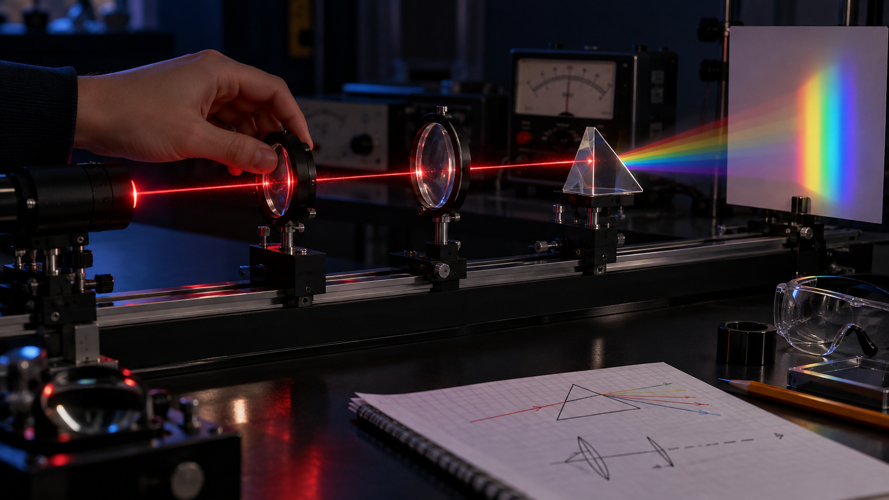

01
Математика и естественные науки
Математика, физика и другие естественные науки помогают разбираться в инженерных задачах. Ученики измеряют, сравнивают, вычисляют и делают выводы на основе наблюдений.
Эти знания нужны, чтобы проверять технические идеи, рассчитывать возможный результат и объяснять, почему решение работает.